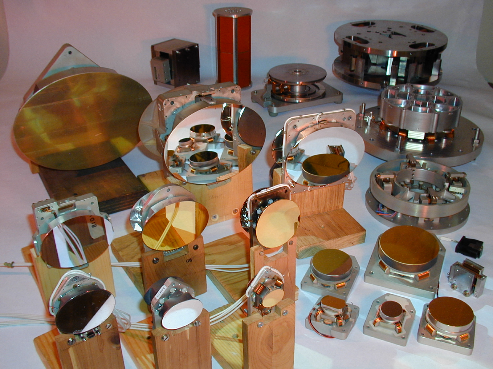

Custom and cost-effective models are available to meet a broad range of requirements

LHDC's Range of Fine Steering Products
- Fine Steering Mechanisms are two-axis, tip-tilt pointing devices used to perform line of sight stabilization:
- Correct atmospheric turbulence
- Correct vehicle base/optical element motion
- Correct friction induced pointing errors
- Perform scanning function
- Perform chopping function
- Perform dither function
- Slew and stare
- Electromagnetic Actuators and flexure suspensions used to solves hysteresis and friction-induced error problems encountered with other systems
- Servo Control Bandwidth can exceed 10 kHz
- Range of travel up to +/- 175 mRad are currently available
- 15,000 rad/sec^2 acceleration available